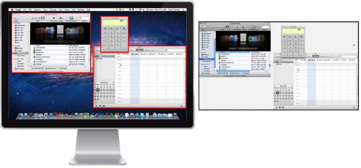

Capture multiple areas on the screen as separate moveable, editable objects.

Capture multiple areas
Move the cursor over the Capture window.
Click the Capture button or press Shift-Control-C.
Hold the Command button while clicking and dragging to make selections. When you release the Command button, the selected areas appear on the canvas in Snagit Editor. Each selected area appears as a separate vector object on the canvas.
 Capture multiple areas
Capture multiple areas